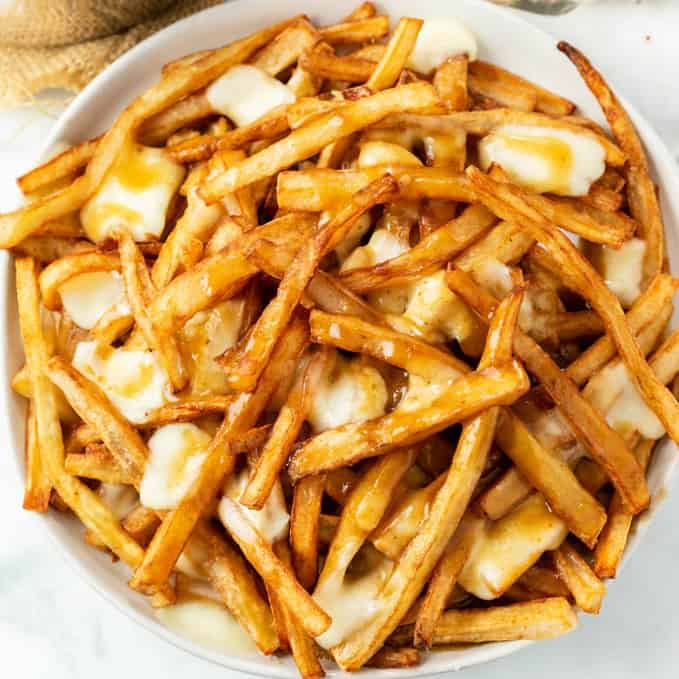

Poutine

A delicious plate of chicken
Poutine is a wonderful and delicious concoction of fries, gravy and cheese curds and is one of the most quintessential Canadian dishes!
Ingredients
Steps
- Cut potatoes into equally sized pieces & soak in cold water.
- Season with oil, salt & pepper, & bake or air fry.
- Cook onion in a skillet until tender. Add seasonings.
- Add beef broth & water, whisking until smooth. Simmer until thickened.
- Assemble poutine by placing hot fries on a plate or even in a paper boat or bowl and top with cheese curds. Pour hot gravy over the top and serve immediately.
Return Home